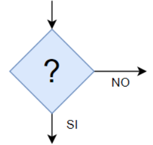
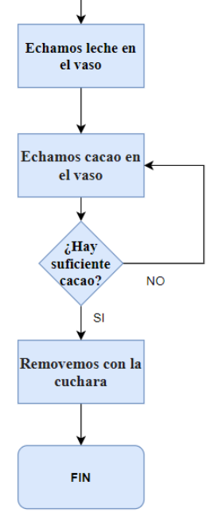
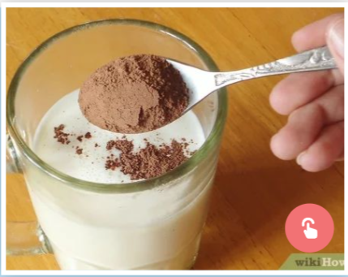
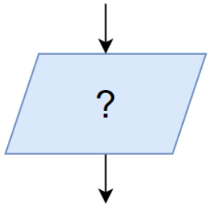
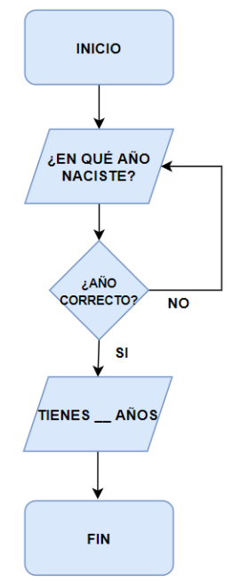
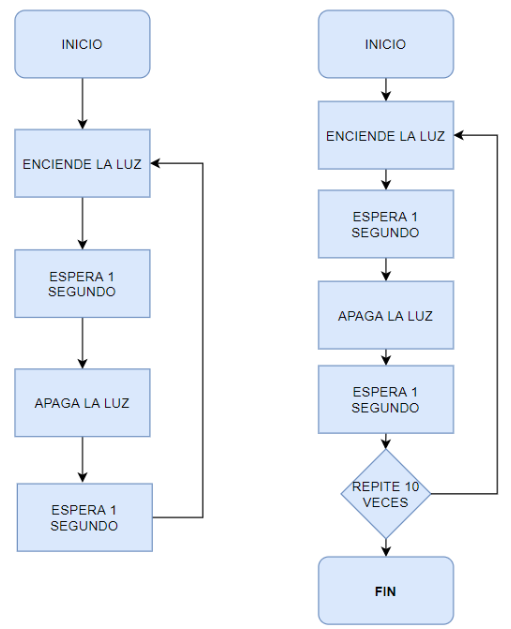

El bloque decisión
Hay veces en las que tenemos que tomar decisiones a lo largo del diagrama, para eso tenemos que utilizar el bloque de Decisión.
Este bloque nos va a permitir analizar una situación y obtener una respuesta en función de si es verdadera o falsa la acción que aparece en él. Las tareas condicionales son como un cruce de caminos o una bifurcación. Dependiendo de la elección o condición, se toma un camino u otro.


En el caso del ejemplo del vaso de leche con cacao, podríamos modificar el final del algoritmo para incluir un bloque de decisión que nos permita decidir si hay suficiente cacao en el vaso o no.
Cuando realizamos un algoritmo, tenemos que tener cuidado de no cometer errores pensando muy bien lo que se hace en cada uno de los bloques o pasos.
Ejemplo: Hemos tenido que separar el bloque "Echamos leche y cacao en el vaso" por dos bloques, "Echamos leche en el vaso" y "Echamos cacao en el vaso", ya que si no hubiese suficiente cacao, añadiríamos más leche, pudiendo llegar a derramarse la leche.
Actividad 4: Bloque de decisión
¡Es tu turno!
Modifica el diagrama de flujo correspondiente al algoritmo con los pasos a seguir para calentar un vaso de leche con cacao en el microondas e incluye un bloque de decisión que nos pregunte si la leche está suficientemente caliente o no.

Crea un Google docs con el título "Bloque de decisión" para llevar a cabo esta actividad. Posteriormente inserta la tarea en tu portfolio digital.
El bloque entrada/salida
En algunos algoritmos pedimos datos o sacamos datos por la pantalla, para ello utilizamos el bloque Entrada / Salida.
Este bloque nos va a permitir realizar preguntas para conocer algunos datos o también poder comunicar al usuario alguna decisión.


¿Para qué podemos utilizar los bloques de entrada/salida?
Mira el diagrama de flujo de la derecha.
¿Qué proceso está representando? ¿Podrías extraer su algoritmo?
Se trata de un programa para averiguar la edad de una persona y mostrarla en una pantalla.
El algoritmo a seguir es el siguiente:
- Preguntar el año de nacimiento.
- Comprobar si el año es válido (no es un año negativo, por ejemplo).
- Mostrar en una pantalla la edad (restando al año actual el año introducido en el programa).
Actividad 5: Bloque entrada/salida
¡Es tu turno!
Realiza el diagrama de flujo correspondiente al algoritmo con los siguientes pasos:
- Te pregunta un número entre 1 y 10
- Comprueba si está entre 1 y 10
- Te pregunta otro número entre 1 y 10
- Comprueba si está entre 1 y 10
- Te da el resultado de sumas los dos números
Crea un Google docs con el título "Bloque entrada/salida" para llevar a cabo esta actividad. Posteriormente inserta la tarea en tu portfolio digital.
Estructuras de repetición
A veces necesitamos repetir ciertas acciones varias veces por lo que existen estructuras de repetición o bucles.

Las estructuras de repetición sirven para hacer algoritmos más cortos. Existen dos tipos:
- Repetición para siempre
Es el caso del primer ejemplo del margen. 👉
La luz se está encendiendo y apagando indefinidamente.
Este tipo de estructura no tiene bloque de FIN.
- Repetición un número de veces
Es el segundo ejemplo del margen. 👉👉
La luz parpadea 10 veces cada segundo y luego el algoritmo termina.
Actividad 6: Estructura de repetición
!Es tu turno¡
Realiza el diagrama de flujo correspondiente al algoritmo con los siguientes pasos:
-
-
Manda a un robot subir 20 escalones.
-
Primero tiene que subir la pierna derecha y luego la pierna izquierda.
- Cuando llegue al último escalón, el robot tiene que detenerse.
-
Crea un Google docs con el título "Bloque estructura de repetición" para llevar a cabo esta actividad. Posteriormente inserta la tarea en tu portfolio digital.